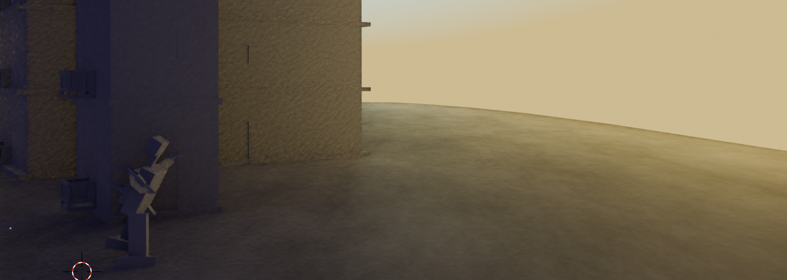

WELCOME!
WHat could be the inspiration for such a strange and unusual project, to create ennui and to make it blissful? Well, in my case, it was a trip to an art gallery. There, for some five minutes, I was enraptured by a video playing on the wall. It was of planes landing and taking off, again and again. These objects, though I call them planes, resembled planes only superficially. It is no different from an artist calling his impressionist painting "Sunflower". The presentation had theatrics to it, certainly, but the whole vibe was understated and melancholic, and after several minutes of watching, I fell into a state of contemplative ennui, if there may exist such a contradiction! I want to recreate this feeling but also make the viewers pay attention, and so instead of planes, we have robots acting out a battle scene on the moon Io. The robots are almost like children. Their geometry is unfixed and broken and the alien swarms in the sky try very hard to destroy their poetry. Sound - white noise, pink noise.
Here are some videos
And some images

About the Animation
I started working on this earlier this semester. The plan is to improve this further. Especially the fighting and add a story. A bit like Ico.